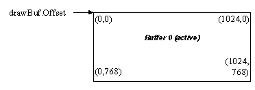

All the device driver accelerator functions take coordinates in a local framebuffer coordinate system, which is established with a call to the SetDrawBuffer function. The coordinate system starts with (0,0) at the start of the active drawing buffer and increments the X coordinate for every pixel and Y coordinate for every scanline. For instance in an 8-bit display mode, if the logical scanline width is set to 1024 bytes and the drawing buffer offset is set to 0, then the coordinate (0,1) will be rendering into the byte at location 1024 from the start of framebuffer memory. It is then up to the application to impose any other logical coordinate system on top of the graphics device driver routines, such as handling viewport mapping etc. Also note that clipping is generally not implemented by most of the drawing functions, so all drawing must be clipped by the application code in software before calling the low level device driver code (some functions do however provide clipping support where doing clipping in software prior to calling the function can be expensive compared to doing it in the hardware drivers).
The SetDrawBuffer function must be called to initialise the active drawing buffer for all subsequent rendering functions, before any drawing takes place. It takes as a parameter a structure which defines the offset, pitch, width and height of the drawing buffer to be used in video memory. In general you will simply set the draw buffer offset to 0, the pitch to the value returned in the bytesPerLine parameter from the SetVideoMode function and the width and height to the dimensions of the display mode. For example the following code can be used to initialise the drawing buffer for single buffered environments:
GA_modeInfo modeInfo;
GA_buffer drawBuf;
... assume modeInfo has been filled in ...
drawBuf.dwSize = sizeof(drawBuf);
drawBuf.Offset = 0;
drawBuf.Stride = modeInfo.BytesPerScanLine;
drawBuf.Width = modeInfo.XResolution;
drawBuf.Height = modeInfo.YResolution;
if (state2d.SetDrawBuffer(&drawBuf) != 0)
PM_fatalError(“Unable to set
draw buffer!”);
For a display mode of 1024x768 this would result in the logical coordinate system similar to the following:

Note: You must be careful when calling the SetDrawBuffer function because some hardware has special restrictions on the starting offset and scanline stride values for offscreen video memory buffers. To simplify offscreen memory management, please use the buffer manager functions provided by the GA_bufferFuncs function group to create and manage all flip buffers and offscreen buffers, which automatically account for these hardware requirements.
Copyright © 2002 SciTech Software, Inc. Visit our web site at http://www.scitechsoft.com